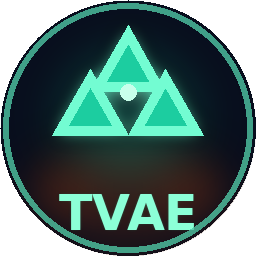
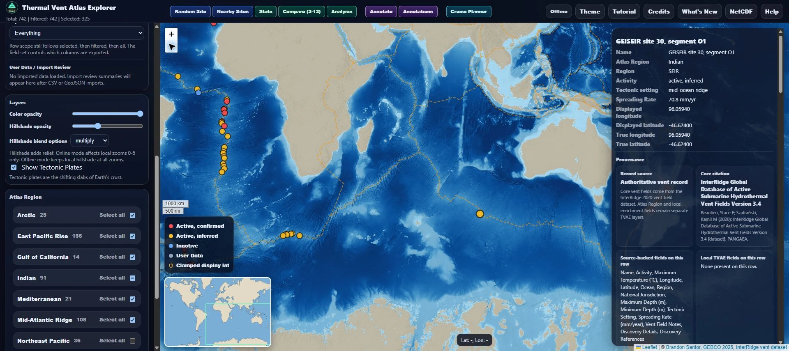
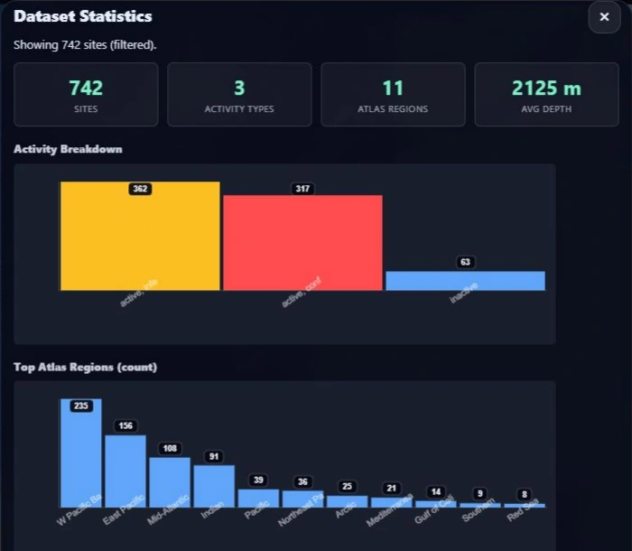
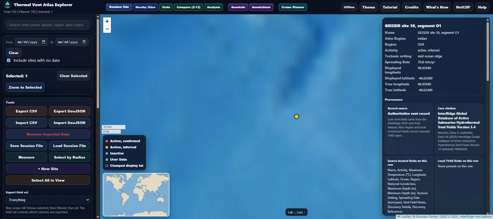

Locate the vents
InputInterRidge + GEBCO + PB2002
ProcessOnline / offline Leaflet atlas
OutputGeographic vent context
Combine authoritative vent records with bathymetry and visible tectonic boundaries.

05 / Research WebGISA research atlas for hydrothermal vents, seafloor relief, tectonic boundaries, and geomicrobiology context, built for lab research with local overview maps for disconnected fieldwork.
Read the case study ↓


Hydrothermal-vent records become more useful when researchers can see their relationship to ocean basins, mid-ocean ridges, and neighboring sites. TVAE combines those records with bathymetry and plate boundaries, with local overview maps for use without an internet connection.
I independently designed and developed TVAE from Sylvan Lab requirements, built its online and offline mapping workflows, and delivered it to the lab for review and internal use.
I developed imports, filtering, site inspection, measurement, comparisons, analytical summaries, saved sessions, and provenance-rich exports. Companion features extend the application from an atlas into a practical research workspace.
The base atlas contains 742 records and credits the InterRidge Global Database of Active Submarine Hydrothermal Vent Fields v3.4. GEBCO 2025 bathymetry and hillshade reveal seafloor relief; PB2002 tectonic plate boundaries add regional structure. The gallery shows the selected Southeast Indian Ridge vent in its wider ocean setting.
Local enrichment fields support biological notes and researcher-supplied measurements such as cells per gram, porosity, and microbial genomic context. The application keeps those fields distinct from core InterRidge records and imported user data. Researchers can examine the geography and provenance of each record alongside the attributes relevant to their work.
Nearby-site tools and comparisons for two to twelve selected records make regional inspection faster. Activity and depth summaries, exploratory plots, annotations, and a cruise waypoint planner help researchers organize questions and locations. An optional Python helper supports NetCDF/GMT bathymetry sampling.
CSV and point GeoJSON imports retain custom fields and receive their own import review. Exports follow an explicit selected, filtered, or complete scope, with separate field sets for core records, enrichments, and imported data.
Local GEBCO overview tiles and hillshade preserve map access offline; native local tiles extend through zoom 5 and are enlarged above it. Session files save filters, selected record IDs, imported rows, annotations, cruise waypoints, map position, and basemap/hillshade display settings. They reopen against the same base atlas and do not contain a complete copy of it. Connected mode adds Esri ocean basemap and hillshade layers at closer zooms. An optional local Python service writes atlas edits to the base CSV and saves a backup. Browser imports remain separate unless explicitly exported or saved in a session.
Explore each stage of the work.
Combine authoritative vent records with bathymetry and visible tectonic boundaries.
Inspect core records alongside separately identified biological notes, local enrichments, and imported attributes.
Use nearby sites, comparisons, plots, annotations, and route planning to organize an investigation.
Save session state and export scoped data with source and field context for later work.